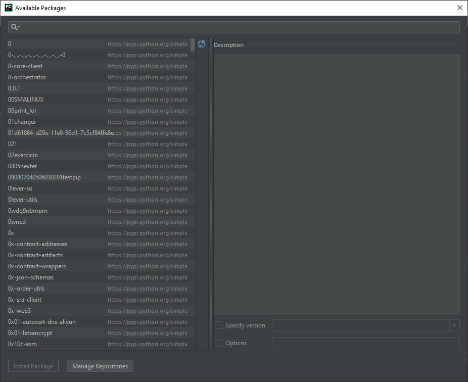
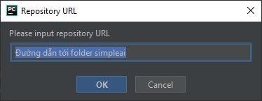
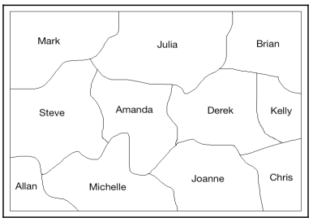
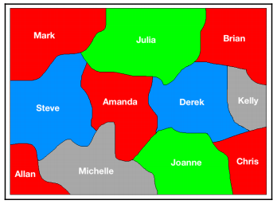
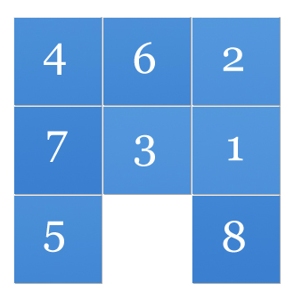
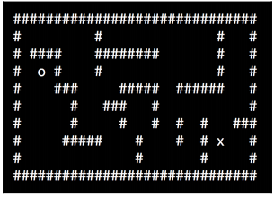

7
Tìm kiếm Heuristic
Trong chương này chúng ta sẽ tìm hiểu về kỹ thuật tìm kiếm heuristic. Kỹ thuật tìm kiếm heuristic sử dụng để tìm kiếm những không gian giải pháp để đưa ra kết quả. Các tìm kiếm được tiến hành bằng cách sử dụng sử dụng phương pháp phỏng đoán(heuristic còn có nghĩa là phỏng đoán, khám phá)để hướng dẫn thuật toán tìm kiếm. Những khám phá (heuristic) này cho phép thuật toán có thể tăng tốc quá trình xử lý, nếu không có nó sẽ mất rất nhiều thời gian và giải pháp.
Học xong chương này bạn sẽ biết được những thứ cụ thể như :
Heuristic search là gì ?
Tìm kiếm và xắp xếp dữ liệu (organizing data) là một chủ đề quan trong trong AI. Có rất nhiều vấn đề cần phải tìm kiếm câu trả lời. Có rất nhiều giải pháp khả thi cho một vấn đề và chúng ta không biết cái nào là chính xác. Bằng cách tổ chức hiệu quả, chúng ta có thể tìm kiếm giải pháp một cách nhanh chóng và hiệu quả. Thông thường, có rất nhiều tùy chọn giải pháp có thể giải quyết một vấn đề nhất định mà không thuật toán nào có thể phát triển để tìm được giải pháp đúng. Ngoài ra, qua mỗi giải pháp duy nhất là không thể vì nó rất mất thời gian và nặng( còn gọi là đắt giá). Ở trường hợp thế này, chúng ta dựa trên một quy tắc giúp chúng ta có thể thu hẹp phạm vi tìm kiếm bằng cách loại bỏ những tùy chọn giải pháp mà chắc chắn là sai. Quy tắc này được gọi là heuristic. Phương pháp sử dụng heuristic (phỏng đoán, khám phá) để hướng dẫn tìm kiếm của chúng ta được gọi là heuristic search. Heuristic trong tiếng hy lạp có nghĩa là "Tìm kiếm" hoặc "khám phá" là kỹ thuật dựa trên kinh nghiệm để giải quyết vấn đề, học hỏi hay khám phá nhằm đưa ra một giải pháp mà không được đảm bảo là tối ưu – trích wiki)
Phương pháp Heuristic rất hữu dụng vì chúng giúp chúng ta rút ngắn thời gian tìm kiếm. Thậm chí nếu heuristic không thể loại bỏ hoàn toàn một số tùy chọn, thì nó cũng giúp chúng ta xắp xếp các tùy chọn để chúng ta có nhiều khả năng nhận được các giải pháp tốt hơn trước.
Trong việc xây dựng các thuật giải Heuristic người ta thường dùng các hàm Heuristic ( heuristic function) đó là các hàm đánh giá thô, giá trị của hàm phụ thuộc vào trạng thái của các bài toán tại mỗi bước xử lý. Nhờ các giá trị này ta có thể chọn được các hành động tương đối trong từng bước của thuật giải
Tìm biết trước và không biết trước
Nếu bạn đã quen thuộc trong ngành khoa học máy tính, có lẽ bạn đã nghe về một vài kỹ thuật tìm kiếm như Depth First Search(DFS – Tìm kiếm chiều sâu),Breadth First Search(BFS – Tìm kiếm theo chiều rộng), Uniform Cost Search(UCS-Tìm kiếm đồng nhất giá). Đó là những kỹ thuật tìm kiếm thường được sử dụng trên đồ thị để tìm kiếm giải phải. Vi dụ trong tìm kiếm không biết trước. Chúng không có sử dụng bất kỳ thông tin biết trước nào hoặc quy tắc nào để loại bỏ một vài hướng. Nó kiểm tra tất cả các hướng tìm kiếm và chọn một cái tối ưu.
Heuristic search, nói một cách khác thì nó có thể gọi là Informed Search( tìm khi biết trước thông tin) bởi vì nó sử dụng những thông cho trước hoặc một quy tắc nào đó để loại bỏ những hướng không cần thiết. Kỹ thuật tìm kiếm không thông tin không có mục đích cần đạt đến ở kết quả. Những kỹ thuật này không thực sự biết nó đang cố gắng làm cái gì trừ khi nó gặp vấn đề gì ở mục tiêu đạt đết trong quá trình tìm kiếm.
Trong vấn đề đồ thị, Chúng ta có thể dùng thuật toán heuristic để hướng dẫn tìm kiếm. Ví dụ, tại mỗi node (nút giao, đỉnh ,..) chúng ta có thể định nghĩa một hàm heuristic và giá trị trả lại (return) là điểm số đại diện cho ước tính của hướng đi từ node hiện tại tới đích đến. Điều này sẽ cho phép thuật toán để xác định nơi nào dẫn tới đích đến.
Chúng ta cần chú ý rằng tìm kiems heuristic không phải là phương pháp tối ưu nhất. Bởi vì chúng ta không khám phá phương pháp khả năng duy nhất và chúng ta dựa vào heuristic. Nhưng nó được đảm bảo để tìm một giải pháp tốt trong một thời gian hợp lý, đó là những gì chúng ta mong đợi từ một giải pháp thực tế. Trong các tình huống thực tế, chúng ta cần những giải pháp nhanh chóng và hiệu quả. Heuristic search đưa ra cho chúng ta một giải pháp hiệu quả bằng cách đưa ra một giải pháp nhanh chóng và hợp lý. Chúng được sử dụng trong trường hợp các vấn đề không được giải quyết trong bất kỳ vấn đề nào khác hoặc mất một thời gian dài để giải quyết.
Constraint Satisfaction Problems
(CSPs - Thỏa mãn vấn đề ràng buộc)
Có rất nhiều vấn đề chúng ta phải giải quyết bởi các sự ràng buộc, Những ràng buộc này về cơ bản là những điều kiện không thể bị bác bỏ hoặc làm trái trong quá trình giải quyết vấn đề. Những vấn đề này được gọi là CSPs ( Thỏa mãn các vấn đề ràng buộc)
CPS về cơ bản là các vấn đề toán học được định nghĩa là tập hợp các biến (variables) phải thỏa mãn một số hạn chế. Khi chúng ta đi đến giải pháp cuối cùng, các trạng thái của các biến này phải thỏa mãn tất cả các điều kiện. CSPs là một dạng trong lập trình ràng buộc (constraint programming) là một mô hình trong đó mối quan hệ giữa các biến (variables) được mô tả dưới dạng ràng buộc lẫn nhau. lập trình ràng buộc cũng là một dạng của lập trình khai báo (Declarative Programing) . Lập trình ràng buộc còn có thể mô tả dưới dạng lập trình logic ràng buộc khi ta nhúng "ràng buộc" vào trong lập trình logic.
Những vấn đề (Problems) này đòi hỏi sử kết hợp giữa thuật toán heuristic và các kỹ thuật tìm kiếm khác giải quyết chúng trong một thời gian hợp lý. Trong trường hợp này, chúng ta sẽ sử dụng kỹ thuật ràng buộc thỏa mãn (constraint satisfaction) để giải quyết vấn đề (problems) trên các vùng giới hạn. Các vùng giới hạn này chứa những số giới hạn của các thành phần(elements). Vì chúng ta xử lý các vùng giới hạn này chúng ta có thể sử dụng các kỹ thuật tìm kiếm để đưa ra giải pháp.
Kỹ thuật tìm kiếm vùng( Local Search)
Tìm kiếm vùng (local search) là một cá thể nhỏ của CSPs. Nó cải thiện các giá trị cho tới khi các ràng buộc được thỏa mãn. Nó lặp đi lặp lại các biến cho tới khi chúng ta tới được đích cần đến. Những thuật toán thay đổi các giá giá trị trong mỗi bước xử lý để chúng ta có thể tiến gần đến đich. Trong không gian giải pháp, cập nhật các giá trị để đến gần đích tốt hơn là những giá trị đã có. Vì thế nó được gọi là local search.
Thuật toán local search cũng làm một thuật toán Heuristic search. NHững thuật toán này sử dụng một hàm để tính toán chất lượng các giá trị trong mỗi lần cập nhật. Ví dụ, nó có thể đếm các số ràng buộc (constraints) đang bị vi phạm bởi bản cập nhạt hiện tại hoặc nó có thể nhìn thấy các bản cập nhật ảnh hưởng tới khoảng cách đến đích. Cái này có thể được hiểu như là phí giành cho mỗi lần phân công. Mục đích chung của local search là tìm mức phí nhỏ nhất ở trong mỗi bước.
Giải thuật leo đồi (Hill Climbing) cũng là một dạng phổ biến của local search. Nó sử dụng một hàm heuristic để đo lường khoảng cách giữa trạng thái hiện tại và đích đế. Khi chúng ta bắt đầu, nó sẽ kiểm tra trang thái hiện tại có phải là đích đến không. Nếu đúng nó sẽ dừng lại, còn không thì nó sẽ chọn một bản cập nhật và tạo ra một trạng thái mới. Nếu trạng thái mới gần đến đích hơn là trạng thái hiện tại thì nó sẽ chọn trạng thái mới thành trạng thái hiện tại còn nếu không nó sẽ bỏ qua và tiếp tục xử lý cho tới khi kiểm tra tất cả các trạng thái có thể. Về cơ bản thì nó sẽ cố trèo lên đỉnh của ngọn đồi.
Giải thuật simulated annealing
Giải thuật Simulated Annealing cũng là một dạng của local search được biết đến như là một giải thuật tìm kiếm ngẫu nhiên(Stochastic search). Giải thuật tìm kiếm ngẫu nhiên sử dụng một cách rộng rãi trong nhiều lĩnh vực khác nhau như robotics, hóa học(chemistry), y học (medicine) Chế tạo ( manufacturing), kinh tế (economic) và nhiều ngành khác. Chúng ta có thể thực hiện các thứ như tối ưu hóa thiết kế cho robot, xác định thời gian để kiếm soát tự động trong nhà máy, và quy hoạch giao thông. Giải thuật ngẫu nhiên (stochastic algorithms) được sử dụng để giải quyết nhiều vấn đề trong thực tế.
Simulated Annealing là một biến thể của giải thuật Leo đồi (Hill Climbing) đã nói bên trên. Một trong những vấn đề chính của giải thuật leo đồi là chúng ta leo nhầm đồi giả (false foothills). Nó có nghĩa là chúng ta bị mắc kẹt trong ma trận. Vì vậy tốt hơn là chúng ta phải kiểm tra toàn bộ không gian trước khi chúng ta thực hiên mỗi bước leo. Để đạt được điều này, tất cả không gian phải được khám phá để xem nó thế nào. Nó sẽ giúp chúng ta tránh được bị mắt kẹt ở nơi xa lắm.
Trong Simulated Annealing, chúng ta xây dựng lại vấn đề và giải quyết nó nhanh nhất. Vì vậy bây giờ chúng ta thay vì leo lên núi thì chúng ta đi xuống. Chúng ta đang làm việc một cách tương tự nhưng theo một cách khác. Chúng ta dùng một hàm để hướng dẫn cho tìm kiếm. Hàm mục tiêu (objective function) phục vụ chúng ta giống hàm heuristic
Tốc độ chúng ta làm nguội đến khi đạt trạng thái được gọi là annealing schedule. Tốc đọ làm nguội này quan trọng bởi vì nó ảnh hưởng trực tiếp tới kết quả cuối cùng. Trong thực tế khi luyện kim nếu quá trình làm nguội nhanh nó sẽ kết thúc thì quá trình sẽ kết thúc luôn và chúng ta không thể điều khiển trạng thái tối ưu cho kim loại. Ngược lại nếu quá trình này chậm và có thể điều khiển sẽ đưa ra cho chúng ta một miếng kim loại ở trạng thái tối ưu nhất.
Xây dựng chuỗi sử dụng greedy search (tìm kiếm tham lam)
Tính chất lựa chọn tham lam
Chúng ta có thể lựa chọn giải pháp nào được cho là tốt nhất ở thời điểm hiện tại và sau đó giải bài toán con nảy sinh từ việc thực hiện lựa chọn vừa rồi. Lựa chọn của thuật toán tham lam có thể phụ thuộc vào các lựa chọn trước đó. Nhưng nó không thể phụ thuộc vào một lựa chọn nào trong tương lai hay phụ thuộc vào lời giải của các bài toán con. Thuật toán tiến triển theo kiểu thực hiện các chọn lựa theo một vòng lặp, cùng lúc đó thu nhỏ bài toán đã cho về một bài toán con nhỏ hơn. Đấy là khác biệt giữa thuật toán này và giải thuật quy hoạch động. Giải thuật quy hoạch động duyệt hết và luôn đảm bảo tìm thấy lời giải. Tại mỗi bước của thuật toán, quy hoạch động đưa ra quyết định dựa trên các quyết định của bước trước, và có thể xét lại đường đi của bước trước hướng tới lời giải. Giải thuật tham lam quyết định sớm và thay đổi đường đi thuật toán theo quyết định đó, và không bao giờ xét lại các quyết định cũ. Đối với một số bài toán, đây có thể là một thuật toán không chính xác. – Trích wiki
Tìm kiếm tham lam (Greedy Search) là một mô hình thuật toán làm cho sự lựa chọn tối ưu ở mỗi thành phần để tìm ra tối ưu tổng thể. Nhưng trong rất nhiều vấn đề, thuật toán tham lam không đưa ra đực giải pháp tổng thể. Một lợi thế của việc sử dụng các thuật toán tham lam là chúng tạo ra một giải pháp gần đúng trong một thời gian hợp lý. Hy vọng điều này gần đúng với giải pháp tối ưu tổng thể.
Các thuật toán tham lam không điều chỉnh các giải pháp của nó dựa trên những thông tin mới có được trong quá trình tìm kiếm. Ví dụ, bạn có kế hoạch đi du lịch và bạn muốn có đường đi tốt nhất ( bài toán bán hàng- xem thêm trên wiki ). Nếu bạn sử dụng thuật toán tham lam để lên kế hoạch di chuyển, nó có thể yêu cầu các tuyến đường ngắn nhưng lại có thể mất thời gian di chuyển hơn, hoặc nó cũng có thể dẫn bạn đến những con đường có thể đi nhanh hơn trong thời ngắn nhưng bạn lại có thể bị kẹt xe. Những thứ này hoàn toàn có thể xảy ra vì các thuật toán Tham Lam chỉ nghĩ về các bước đi liên tiếp chứ không phải là giải pháp tổng thể.
Hãy xem làm thế nào để giải quết một vấn đề sử dụng tìm kiếm Tham Lam. Trong vấn đề này chúng ta sẽ cố tạo ra một chuỗi đầu vào (input string) dựa trên bảng chữ cái. Chúng ta sẽ hỏi thuật toán tìm kiếm những giải pháp không gian và xây dựng một con đường tới giải pháp.
Chúng ta sẽ sử dụng một package có tên là simpleai trong suốt chương này . Nó chưa vài hàm khác nhau mà chúng ta sẽ sử dụng thường xuyên trong phần này để xây dựng những giải pháp sử dụng tìm kiếm heuristic. Link github: https://github.com/simpleai-team/simpleai
Bạn có thể download bản realease 0.8.2 hoặc download tại đây . Unzip và chép folder simpleai vào chung với folder bạn đang code. Giờ thì bạn có thể sử dụng các hàm trong simpleai.
Khi bạn sử dụng PyCharm thì khác 1 chút : Vào Setting->Project Interpreter -> dấu + (install)
Chọn Manager Repositories ở bên dưới:

Chọn dấu +

Rồi sau đó cài đặt simpleai như bình thường.
Giờ thì code nào
import argparse
import simpleai.search as ss
# Tạo một hàm để parser tham số input
def build_arg_parser():
parser=argparse.ArgumentParser(description='Tạo input string sử dụng thuật toán greedy')
parser.add_argument("--input-string",dest='input_string',required=True,help='Chuỗi nhập')
parser.add_argument("--initial-state",dest='initial_state',required=False,default='',help="Điểm bắt đầu tìm kiếm")
return parser
# Tạo một class chwuas các thuộc tính cần thiết để giải quyết các vấn đề. Class này thừa kế class SearchProblem trong library simpleai. Method đầu tiên set_target là method chúng ta tạo ra để định nghĩa string target
class CustomProblem(ss.SearchProblem):
def set_target(self,target_string):
self.target_string=target_string
# Method actions laf method cos sawnx trong SearchProblem và chúng ta cần override nó. Nó chịu trách nhiệm thực hiện các bước để hướng tới kết quả cuối. Nếu độ dài của chuỗi đang tạo ra nhỏ hơn độ dài của chuỗi đích nó sẽ trả về danh sách bảng chữ cái có thể chọn từ đó. Nếu không nó sẽ trả về chuỗi rỗng (empty string):
def actions(self, state):
if len(state)<len(self.target_string):
alphabets='abcdefghijklmnopqrstuvwxyz '
return list(alphabets+''+alphabets.upper())
else:
return []
#Method resul là một metod có sẵn của SearchProblem và ta override method để tính toán kết quả bằng cách nối các chuỗi và các hành actions đã lấy trước:
def result(self, state, action):
return state+action
# Method is_goal là method sẵn có của SearchProblem và nó được sử dụng để kiểm tra xem chúng ta đã đến đích chưa
def is_goal(self, state):
return state==self.target_string
# Method heuristic cũng làm method của SearchProblem và chúng ta cũng cần override nó. Chúng ta sẽ định nghĩa lại cái chúng ta cần "khám phá" (heuristic) để giải quyết vấn đề chúng ta gặp phải ( ở đây là xây chuỗi) .
# Chúng ta sẽ tính toán còn bao nhiêu xa nữa từ trạng thái của chúng ta đang có(current state) để tới đích (goal) và sử dụng số heuristic này để hướng tới đích:
def heuristic(self, state):
# So sách chuỗi còn lại với chuỗi đích:
dist=sum([1 if state[i]!=self.target_string[i] else 0 for i in range(len(state))])
# Khoảng cách độ dài 2 chuỗi
diff=len(self.target_string)-len(state)
return dist+diff
# Tạo hàm main để lấy tham số input
if __name__=='__main__':
args=build_arg_parser().parse_args()
customProblem=CustomProblem()
customProblem.set_target(args.input_string)
customProblem.initial_state=args.initial_state
output=ss.greedy(customProblem)
print('Chuỗi cần tạo ra',args.input_string)
print('Các phần giải pháp:')
for item in output.path():
print(item)
Kết quả nhận được tại Terminal:
greedy_search.py --input-string "Greedy Search" --initial-state ""
Chuỗi cần tạo ra Greedy Search
Các phần giải pháp:
(None, '')
('G', 'G')
('r', 'Gr')
('e', 'Gre')
('e', 'Gree')
('d', 'Greed')
('y', 'Greedy')
(' ', 'Greedy ')
('S', 'Greedy S')
('e', 'Greedy Se')
('a', 'Greedy Sea')
('r', 'Greedy Sear')
('c', 'Greedy Searc')
('h', 'Greedy Search')
Giải quyết một vấn đề cùng với ràng buộc
Chúng ta đã bàn luận về CSPs. Bây giờ chúng ta thử ứng dụng chúng vào thực tế. Chúng ta có một danh sách gồm các tên và mỗi tên này chỉ có thể lấy một giá trị xác định. Chúng ta cũng có một bộ số ràng buộc với những người đó phải thỏa mãn.
from simpleai.search import CspProblem,backtrack,min_conflicts,MOST_CONSTRAINED_VARIABLE,HIGHEST_DEGREE_VARIABLE,LEAST_CONSTRAINING_VALUE
# Tạo ràng buộc (contraint-ràng buộc) thứ 1 yêu cầu tất cả các biến trong danh sách input phải là giá trị duy nhất:
def constraint_unique(variables,values):
#Kiểm tra xem tất cả các giá trị có phải là duy nhất
return len(values)==len(set(values))
# Tạo ràng buộc thứ 2 yêu cầu biến đầu tiên phải có giá trị lớn hơn biến thứ 2
def constraint_bigger(variables,values):
return values[0]>values[1]
# Tạo ràng buộc thứ 3 : yêu cầu nếu giá trị biến đầu tiên phải là số lẻ,và giá trị của biến thứ 2 phải là số chẵn và ngược lại:
def contraint_odd_even(variables,values):
if values[0]%2==0:
return values[1]%2==1
else:
return values[1]%2==0
# Tạo hàm main
if __name__=='__main__':
variables=('Tèo','Tý','Sửu','Dậu')
#Tạo danh sách giá trị mà mỗi biến tên có thể lấy
domain={
'Tèo':[1,2,3],
'Tý':[1,3],
'Sửu':[2,4],
'Dậu':[2,3,4]}
Tạo vài kịch bản ràng buộc cho. Trong trường hợp này chúng ta sẽ có 3 ràng buộc như sau
contraints=[
(('Tèo','Tý','Sửu'),constraint_unique),
(('Sửu','Tý'),constraint_bigger),
(('Tèo','Dậu'),contraint_odd_even)
]
# Sử dụng các biến và các ràng buộc để tạo 1 object CspProblem:
problem=CspProblem(variables,domain,contraints)
# Tính toán các giải pháp và in nó ra Terminal:
print("Các giải pháp:\n\nNormal:",backtrack(problem))
# Tính toán các giải pháp sử dụng MOST_CONSTRAINED_VARIABLE
print("MOST_CONSTRAINED_VARIABLE:",backtrack(problem,value_heuristic=MOST_CONSTRAINED_VARIABLE))
print("HIGHEST_DEGREE_VARIABLE:",backtrack(problem,value_heuristic=HIGHEST_DEGREE_VARIABLE))
print("LEAST_CONSTRAINING_VALUE",backtrack(problem,value_heuristic=LEAST_CONSTRAINING_VALUE))
# Sử dụng kết hợp variable_heuristic và value_heuristic
print("MOST_CONSTRAINED_VARIABLE,LEAST_CONSTRAINING_VALUE",backtrack(problem,variable_heuristic=MOST_CONSTRAINED_VARIABLE,value_heuristic=LEAST_CONSTRAINING_VALUE))
print("HIGHEST_DEGREE_VARIABLE,LEAST_CONSTRAINING_VALUE",backtrack(problem,variable_heuristic=HIGHEST_DEGREE_VARIABLE,value_heuristic=LEAST_CONSTRAINING_VALUE))
#Tính toán các giải pháp sử dụng minimum conflicts heuristic:
print("Minimum conflicts:",min_conflicts(problem))
Kết quả thu được tại output:
Các giải pháp:
Normal: {'Tèo': 1, 'Tý': 3, 'Sửu': 4, 'Dậu': 2}
MOST_CONSTRAINED_VARIABLE: {'Tèo': 1, 'Tý': 3, 'Sửu': 4, 'Dậu': 2}
HIGHEST_DEGREE_VARIABLE: {'Tèo': 1, 'Tý': 3, 'Sửu': 4, 'Dậu': 2}
LEAST_CONSTRAINING_VALUE {'Tèo': 1, 'Tý': 3, 'Sửu': 4, 'Dậu': 2}
MOST_CONSTRAINED_VARIABLE,LEAST_CONSTRAINING_VALUE {'Tý': 1, 'Sửu': 2, 'Tèo': 3, 'Dậu': 2}
HIGHEST_DEGREE_VARIABLE,LEAST_CONSTRAINING_VALUE {'Tèo': 1, 'Tý': 3, 'Sửu': 4, 'Dậu': 2}
Minimum conflicts: {'Tèo': 3, 'Tý': 1, 'Sửu': 4, 'Dậu': 2}
Giải quyết vấn đề tô màu từng vùng
Giờ thử sử dụng thuật toán thỏa mãn ràng buộc để giải quyết vấn đề tô màu.
Hãy thử xem hình phía dưới:

Chúng ta có vài vùng và ứng với mỗi vùng được dán nhãn (labeled) bởi các tền khác nhau. Nhiệm vụ của chúng ta là tô màu tất cả các vùng bằng 4 màu, và chúng phải thỏa mãn điều kiện ràng buộc là 2 vùng nằm kề nhau không được trùng màu nhau:
from simpleai.search import CspProblem,backtrack
# Tạo hàm ràng buộc yêu cầu giá trị phải khác nhau
def constraint_func(variables,values):
return values[0]!=values[1]
# Tạo hàm main
if __name__=='__main__':
# tạo variables cần thiết
names = ('Mark', 'Julia', 'Steve', 'Amanda', 'Brian', 'Joanne', 'Derek', 'Allan', 'Michelle', 'Kelly')
# Tạo values với giá trị là các màu cho trước
colors = dict((name, ['red', 'green', 'blue', 'gray']) for name in names)
# Chúng ta cần chuyển đổi thông tin đã có vào một thứ để thuật toán có thể hiểu
# Tạo một ràng buộc điều kiện yêu cầu danh sách những người nằm kế nhau trên bản đồ không có màu trùng nhau
constraints=[
(('Mark', 'Julia'), constraint_func), (('Mark', 'Steve'), constraint_func),
(('Julia', 'Steve'), constraint_func), (('Julia', 'Amanda'), constraint_func),
(('Julia', 'Derek'), constraint_func), (('Julia', 'Brian'), constraint_func),
(('Steve', 'Amanda'), constraint_func), (('Steve', 'Allan'), constraint_func),
(('Steve', 'Michelle'), constraint_func), (('Amanda', 'Michelle'), constraint_func),
(('Amanda', 'Joanne'), constraint_func), (('Amanda', 'Derek'), constraint_func),
(('Brian', 'Derek'), constraint_func), (('Brian', 'Kelly'), constraint_func),
(('Joanne', 'Michelle'), constraint_func), (('Joanne', 'Amanda'), constraint_func),
(('Joanne', 'Derek'), constraint_func), (('Joanne', 'Kelly'), constraint_func),
(('Derek', 'Kelly'), constraint_func),
]
# Sử dụng variables ( tên - name) và domain (colors) biến constraints vừa tạo làm tham số cho hàm CspProblem
problem=CspProblem(names,colors,constraints)
# Giải quyết vấn đề và in ra phương pháp :
output=backtrack(problem)
print('\nColor mapping:\n')
for k, v in output.items():
print(k, '==>', v)
Kết quả thu được tại Terminal:
Color mapping:
Mark ==> red
Julia ==> green
Steve ==> blue
Amanda ==> red
Brian ==> red
Joanne ==> green
Derek ==> blue
Allan ==> red
Michelle ==> gray
Kelly ==> gray
Nếu tô màu theo kết quả cho hình vẽ ban đầu ta sẽ có hình vẽ như sau

Xây dựng bộ giải mã game câu đố 8-Puzzle
8-Puzzle là biến thể của game 15-Puzzle. Bạn có thể xem nó ở đây: https://en.wikipedia.org/wiki/15_puzzle. Bạn sẽ có một lưới ngẫu nhiên gồm các con số trên đó và xắp xếp sao cho chúng có giá trị từ nhỏ đến lớn. Nó khá giống với game trượt ô xếp hình chúng ta thường chơi cách đây khoảng 20 năm :D :
còn game chúng ta có dạng thế này
Chúng ta sẽ sử dụng thuật toán A* để giải quyết vấn đề. Nó là một thuật toán được sử dụng đề tìm kiếm giải pháp đường đi . Thuật toán này là thuật toán kết hợp giữa 2 thuật toán Dijkstra's algorithm và thuật toán search tham lam ( greedy best-first search). Thay vì không mù quáng đi lang thang thì thuật toán A* sẽ chọn một đường đi "đầy hứa hẹn". Tại mỗi điểm, Chúng ta tạo ra một danh sách tất cả các khả năng và sau đó chọn một cái có giá trị thấp nhất thỏa mãn điều kiện của chúng ta.
Giờ thì làm sao để tính giá trị thấp nhất tại 1 điểm. Tại mỗi điểm chúng ta cần tính giá trị. Giá trị này dựa trên tổng số của 2 giá trị - Giá trị đầu tiên là giá trị lấy được tại điểm hiện tại và giá trị thứ 2 là giá trị thứ 2 là giá trị đạt đến điểm đích tính từ giá trị hiện tại. Chúng ta sử dụng phép tổng này giống như là số heuristic của chúng ta. Giống như đã biets thì giá trị thứ 2 về cơ bản không phải là tính toán hoàn hảo. Nếu nó là hoàn hảo thì thuật toán A* sẽ tìm được giải pháp nhanh chóng. Nhưng thường thì nó sẽ phải mất vài lần để tìm kiếm đường đi đến đích. Nhưng thuật toán A* rất hiệu quả trong việc tìm kiếm đường đi tối ưu và nó là một trong những giải thuật thông dụng nhất trong trường hợp này.
Giờ thì sử dụng thuật toán A* để xây dựng một máy giải toán cho câu đó 8-Puzzle. Đây là một biến thể của các giải pháp được đưa ra trong simpleai.
from simpleai.search import astar,SearchProblem
## Tạo một hàm để chuyển đổi giữa list và tring
def string_to_list(input):
if isinstance(input,str):
return [x.split('-') for x in input.split('\n')]
else:
return '\n'.join(['-'.join(x) for x in input])
# Tạo hàm kiểm tra vị trí của một ô trong lưới 8x8
def get_location(rows,input_element):
for i,row in enumerate(rows):
for j,item in enumerate(row):
if item==input_element:
return i,j
#Định nghĩa đích đến cần đạt được
GOAL = '''1-2-3
4-5-6
7-8-e'''
# Tạo vị trí đích đến cho mỗi số để tính khoảng cách
goal_positions = {}
rows_goal = string_to_list(GOAL)
for number in '12345678e':
goal_positions[number] = get_location(rows_goal, number)
# Tạo class PuzzleSolver chứa các thuộc tính để giải quyết bài toán. class này kế thừa từ class SearchProblem
class PuzzleSolver(SearchProblem):
#Method actions để lấy danh sách các ô có thể di chuyển tới ô khoảng trống
def actions(self, state):
rows=string_to_list(state)
row_empty,col_empty=get_location(rows,'e')
# kiểm tra vị trí của ô tróng và tạo action mới:
actions=[]
if row_empty>0:
actions.append(rows[row_empty-1][col_empty])
if row_empty<2:
actions.append(rows[row_empty+1][col_empty])
if col_empty>0:
actions.append(rows[row_empty][col_empty-1])
if col_empty<2:
actions.append(rows[row_empty][col_empty+1])
return actions
# Override Method result. Chuyển đổi những chuỗi thành list và lấy vị trí của ô trống. Tạo ra kết quả (result) bằng cách cập nhật vị trí:
def result(self, state, action):
rows=string_to_list(state)
row_empty,col_empty=get_location(rows,'e')
row_new,col_new=get_location(rows,action)
rows[row_empty][col_empty],rows[row_new][col_new]=rows[row_new][col_new],rows[row_empty][col_empty]
return string_to_list(rows)
# Kiểm tra nếu đã đến được đích
def is_goal(self, state):
return state==GOAL
# Method heuristic. Chúng ta sử dụng heuristic để tính toán khoảng cách từ trạng thái hiện tại đến trạng thái đích sử dụng phép tính khoảng cách Mahattan
def heuristic(self, state):
rows=string_to_list(state)
distance=0
for number in '12345678e':
row_new,col_new=get_location(rows,number)
row_new_goal,col_new_goal=goal_positions[number]
distance+=abs(row_new-row_new_goal)+abs(col_new-col_new_goal)
return distance
# Sử dụng A* để khởi tạo vị trí ban đầu
INITIAL = \
'''4-e-3
7-1-5
6-8-2'''
problem=PuzzleSolver(INITIAL)
result=astar(problem)
# In các bước đi
for i,(action,state) in enumerate(result.path()):
print()
if action==None:
print('Hình khởi tạo ban đầu')
elif i==len(result.path())-1:
print('Sau khi di chuyển ô',action,'Vào vị trí ô trống. DONE: ')
else:
print('Sau khi di chuyển ô', action, 'Vào vị trí ô trống. Ta có')
print(state)
Kết quả từng bước được in ra Terminal:
Hình khởi tạo ban đầu
4-e-3
7-1-5
6-8-2
Sau khi di chuyển ô 1 Vào vị trí ô trống. Ta có
4-1-3
7-e-5
6-8-2
Sau khi di chuyển ô 8 Vào vị trí ô trống. Ta có
4-1-3
7-8-5
6-e-2
Sau khi di chuyển ô 6 Vào vị trí ô trống. Ta có
4-1-3
7-8-5
e-6-2
Sau khi di chuyển ô 7 Vào vị trí ô trống. Ta có
4-1-3
e-8-5
7-6-2
Sau khi di chuyển ô 4 Vào vị trí ô trống. Ta có
e-1-3
4-8-5
7-6-2
Sau khi di chuyển ô 1 Vào vị trí ô trống. Ta có
1-e-3
4-8-5
7-6-2
Sau khi di chuyển ô 3 Vào vị trí ô trống. Ta có
1-3-e
4-8-5
7-6-2
Sau khi di chuyển ô 5 Vào vị trí ô trống. Ta có
1-3-5
4-8-e
7-6-2
Sau khi di chuyển ô 2 Vào vị trí ô trống. Ta có
1-3-5
4-8-2
7-6-e
Sau khi di chuyển ô 6 Vào vị trí ô trống. Ta có
1-3-5
4-8-2
7-e-6
Sau khi di chuyển ô 8 Vào vị trí ô trống. Ta có
1-3-5
4-e-2
7-8-6
Sau khi di chuyển ô 2 Vào vị trí ô trống. Ta có
1-3-5
4-2-e
7-8-6
Sau khi di chuyển ô 5 Vào vị trí ô trống. Ta có
1-3-e
4-2-5
7-8-6
Sau khi di chuyển ô 3 Vào vị trí ô trống. Ta có
1-e-3
4-2-5
7-8-6
Sau khi di chuyển ô 2 Vào vị trí ô trống. Ta có
1-2-3
4-e-5
7-8-6
Sau khi di chuyển ô 5 Vào vị trí ô trống. Ta có
1-2-3
4-5-e
7-8-6
Sau khi di chuyển ô 6 Vào vị trí ô trống. DONE:
1-2-3
4-5-6
7-8-e
Thực hiện theo từng bước trên bạn sẽ giải được game: hãy thử chơi game ở đây: http://mypuzzle.org/sliding
Xây dựng một bộ giải mã trò chơi mê cung:
Giờ thì dùng thuật toán A* để giải quyết mê cung sau:

Hình # là những vật cản của mê cung. Hình o là điểm bắt đầu và x là điểm kết thúc. Giờ thì ta hãy sử dụng SearchProblem và A* để giải quyết vấn đề này bằng Python
import math
from simpleai.search import SearchProblem,astar
#Tạo Map
MAP = """
##############################
# # # #
# #### ######## # #
# o # # # #
# ### ##### ###### #
# # ### # #
# # # # # # ###
# ##### # # # x #
# # # #
##############################
"""
#Chuyển Map thành list
MAP=[list(x) for x in MAP.split("\n") if x]
#đinh giá để di chuyển xung quanh map. Di chuyển chéo thì sẽ cao hơn là di chuyển theo hướng thẳng.
cost_regular=1.0
cost_diagonal=1.7
#Gắn giá vào hướng di chuyển tương ứng
COST={
"up":cost_regular,
"down":cost_regular,
"left":cost_regular,
"right":cost_regular,
"up left":cost_diagonal,
"up right":cost_diagonal,
"down left":cost_diagonal,
"down right":cost_diagonal,
}
#Tạo Class MazeSolver thừa kế class SearchProblem
class MazeSolver(SearchProblem):
def __init__(self,board):
self.board=board
self.goal=(0,0)
#Tách những khối ban đầu và vị trí kết thúc:
for y in range(len(self.board)):
for x in range(len(self.board[y])):
if self.board[y][x].lower()=="o":
self.initial=(x,y)
elif self.board[y][x].lower()=="x":
self.goal=(x,y)
super(MazeSolver,self).__init__(initial_state=self.initial)
# Override method actions, tại mỗi vị trí chúng ta cần kiểm gia trá trị để đi đến ô kế tiếp và sau đó kết nối với các hành động(action) có thể. Nếu ô bên cạnh bị chặn thì hành động sẽ được bỏ qua
def actions(self, state):
actions=[]
for action in COST.keys():
newx,newy=self.result(state,action)
if self.board[newy][newx]!="#":
actions.append(action)
return actions
# Override method result. Dựa trên trạng thái hiện tại và hành động input, cập nhật vị trí tọa độ x và y
def result(self, state, action):
x,y=state
if action.count("up"):
y-=1
if action.count("down"):
y+=1
if action.count("left"):
x-=1
if action.count("right"):
x+=1
new_state=(x,y)
return new_state
# Kiểm tra xem đã đến đích chưa ?
def is_goal(self, state):
return state==self.goal
# Chúng ta định nghĩa hàm cost. đây là giá để di chuyển tới ô kế tiếp, và nó sẽ khác khi di chuyển ngang dọc và di chuyển chéo
def cost(self,state,action,state2):
return COST[action]
# Giờ thì ta sử dụng hàm heuristic. Ở trường hợp này chúng ta sử dụng cách tính khoảng cách Euclidean ( tiên đề Euclidean):
def heuristic(self, state):
x,y=state
gx,gy=self.goal
return math.sqrt((x-gx)**2+(y-gy)**2)
# Định nghĩa hàm main
if __name__=="__main__":
problem=MazeSolver(MAP)
result=astar(problem,graph_search=True)
# Xem path kết quả
path=[x[1] for x in result.path()]
# In kết quả ra Terminal
print()
for y in range(len(MAP)):
for x in range(len(MAP[y])):
if(x,y)==problem.initial:
print('0',end='')
elif(x,y)==problem.goal:
print('x',end='')
elif(x,y) in path:
print('.',end='')
else:
print(MAP[y][x],end='')
print()
Kết quả được in ra ở Terminal:
##############################
# # # #
# #### ######## # #
# 0 # # # #
# .### ##### ###### #
# . # ### # .... #
# . # # ..# .# #. ###
# .##### .# .. # # x #
# ........ # # #
##############################
Tổng kết
Trong chương này chúng ta đã học về giải thuật tìm kiểm heuristic. Chúng ta đã thảo luận về sự khác nhau giữ tìm kiếm biết trước và không biết trước thông tiin. Chúng ta học về giải quyết vấn đề với những ràng buộc cần thỏa mãn. Chúng ta tìm hiểu về giải thuật local search và tại sao lại dùng giải thuật mô phỏng luyện kim (simulated annealing). Chúng ta thực hiện giải thuật tìm kiếm tham lam (greedy search) cho phép xây dựng chuỗi.Và giải quyết vấn đề với công thức CSPs( vấn đề ràng buộc cần thủa mãn).
Chúng ta đã học cách import một package với Pycharm và sử dụng thuật toán A* trong package simpleai để giải quyết nhiều bài toán giải đố như 8-puzzle hay maze-solver.
Chương tiếp theo chúng ta sẽ thảo luận về thuật toán di truyền (genetic algorithms) và cách ứng dụng nó vào thực tế.